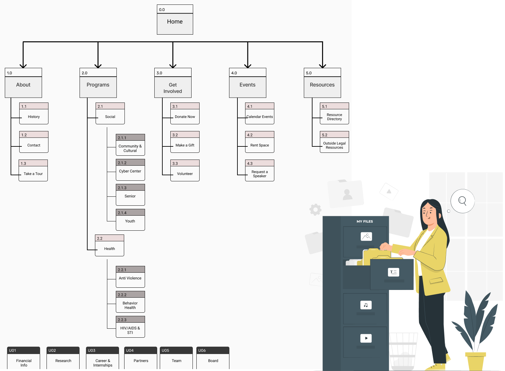
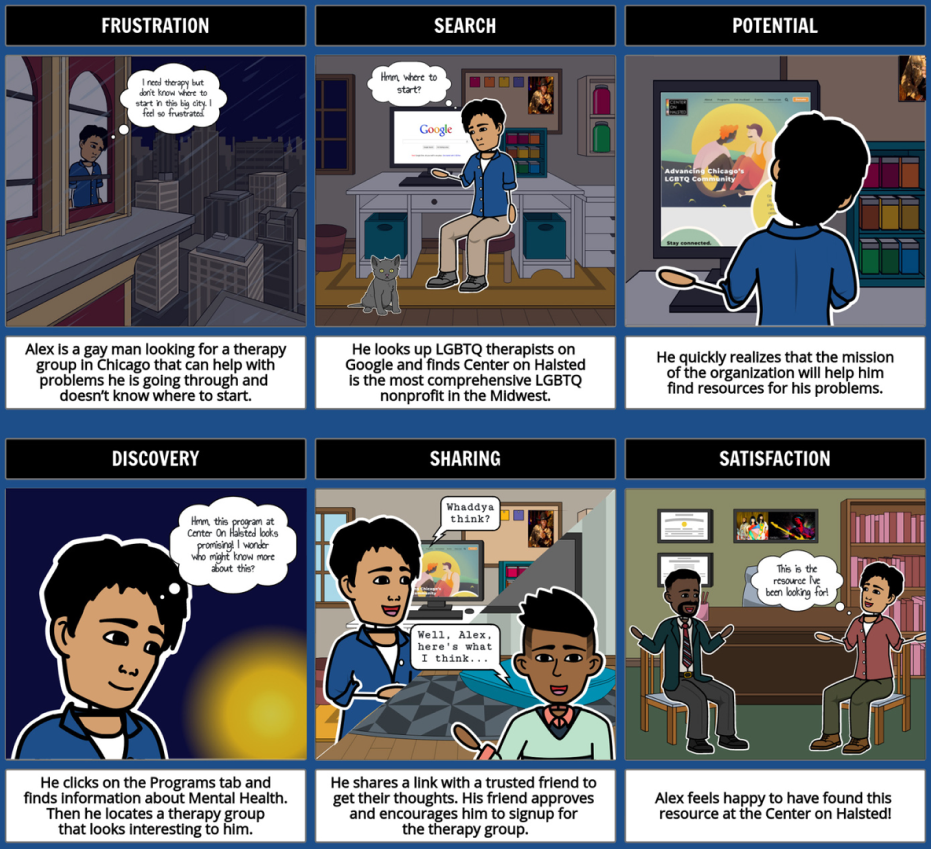
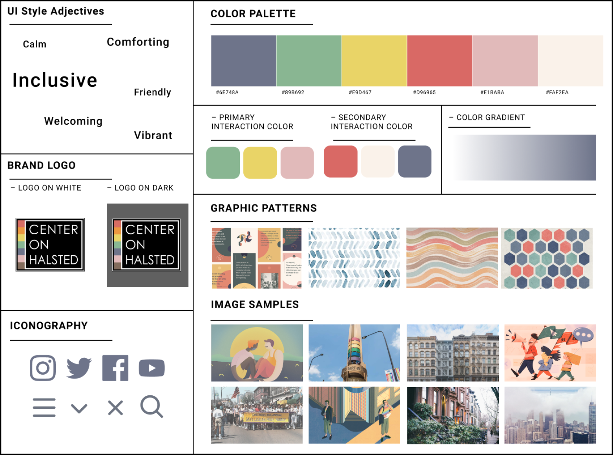
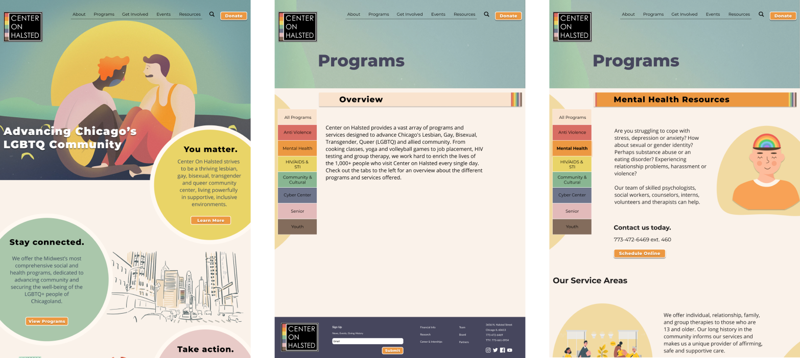
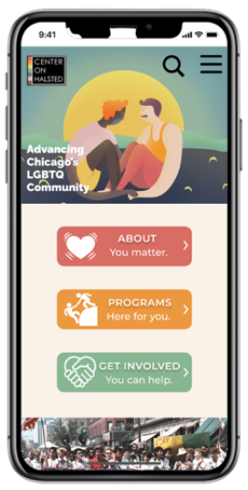

Overview
User interview comments and notes were grouped into themes and analyzed for commonalities through an affinity diagram and empathy map. From here, we were able to paint a clear picture of who our user was and what they were primarily looking for.
Completing this exercise helped us uncover a deeper concern across the LGBTQ+ community that it is hard finding credible mental health resources, such as therapists, that truly understand the struggles and needs of the group.
Coupling this finding with the complexity around understanding the Center on Halsted’s website and service offerings, we developed a user insight and user persona we would plan the remainder of our redesign around.
User Persona
User Insight
During interviews, we discovered that a majority of individuals within the LGBTQ community have difficulty finding resources that meet their specific needs or issues with the community, often questioning the credibility and experience of professionals who specialize in LGBTQ+ concerns.
Therefore, we believe that LGBTQ people are not finding the kind of resources they need and that we might be able to help by drawing more attention to the range of mental health resources that the Center On Halsted offers.
We might do this by organizing the resources more effectively. Doing this may help community members feel more confident in finding dependable mental health resources, quickly and easily.
Overview
In order to develop solutions to Alex’s defined problem, our user interview findings, stakeholder feedback, and heuristic evaluation analysis were reevaluated. My team ended up summarizing our findings collectively into potential features to incorporate in our design.
From this brainstorm, we voted on our favorite features that we felt addressed our problem statement the best and then incorporated them into a feature prioritization matrix. This helped us understand which ideas would be our “quickest wins” given our 3 week project timeline.
Key Features
Placing the mission on the homepage in order to clarify the purpose of the organization.
Making the homepage more accessibile with service offerings and visible resources.
Simplify the process to connect with a trusted LGBTQ+ focused mental health therapist.
Information Architecture
The features we selected signified a need to reorganize the content and navigation of the site in order to meet our accessibility goals. My team completed a card sorting exercise that resulted in regrouping site pages into a redesigned Sitemap we would utilize as a baseline for our prototyping stage.


The solutions desgined to address Alex’s problem are summarized in our storyboard.
Lo-Fidelity Prototype
My team started off by developing 3 individual wireframe concepts for the new homepage redesign. We incorporated elements of each of our designs into a master Lo-Fidelity prototype.
Focusing first on the redesigned sitemap, we utilized our Lo-Fidelity prototype to ensure our new navigation was simple, fast and easy. Initial testing unveiled confusion around our “Programs” and “Health” headers. Since all items under the “health” programs were also technically labeled programs (.e.g Mental Health Programs, etc.), our users were confused where to go first for these resources. Therefore, we consolidated all Programs (Social and Health) into one navigation menu with appropriate labels.
Design System Development
After our initial testing we began development of a Hi-Fidelity prototype. During our stakeholder interview, we learned the importance the center has been to the Chicagoland LGBTQ+ community throughout the entire rise of the modern gay rights movement. We wanted the aesthetic of the website to honor that history by combining subtle retro gay pride colors with the urban classic feel that the Lakeview neighborhood in Chicago has to offer. We also used images and colors to bring feelings of comfort and warmth.

Hi-Fidelity Prototype Samples


Responsive Design & Testing
Our Hi-Fidelity desktop prototype was converted into a responsive design through development of a mobile version. We went through another round of usability testing and made additional improvements based on user feedback and interactions. This included reducing the size of the hero image on the desktop prototype, changing the language of navigation items (e.g. “Rent Space” to “Rent Event Space”), and making the “Donate” button more prominent.